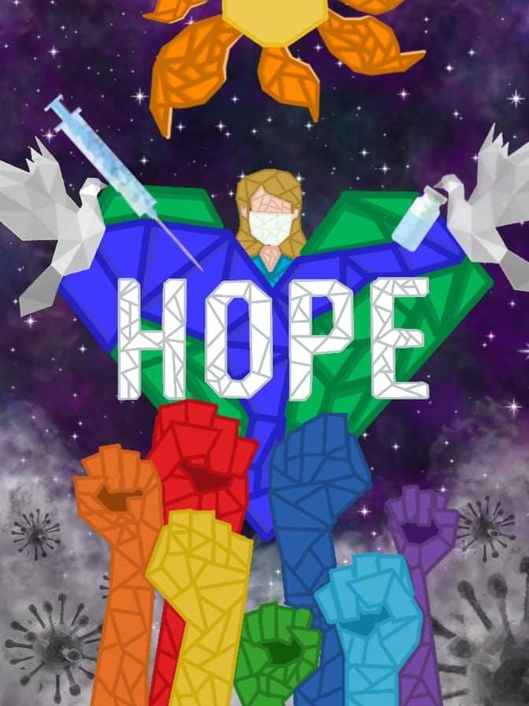

COVID-19 is a disease caused by a new strain of coronavirus. ‘CO’ stands for corona, ‘VI’ for virus, and
‘D’ for disease. Formerly, this disease was referred to as ‘2019 novel coronavirus’ or ‘2019-nCoV.’
The COVID-19 virus is a new virus linked to the same family of viruses as Severe Acute Respiratory
Syndrome (SARS) and some types of common cold.
WHAT ARE THE SYMPTOMS OF COVID-19?
Symptoms can include fever, cough and shortness of breath. In more severe cases, infection can cause
pneumonia or breathing difficulties. More rarely, the disease can be fatal. These symptoms are similar to
the flu (influenza) or the common cold,which are a lot more common than COVID-19. This is why testing
is required to confirm if someone has COVID-19.
HOW DOES COVID-19 SPREAD?
The virus is transmitted through direct contact with respiratory droplets of an infected person (generated
through coughing and sneezing). Individuals can also be infected from and touching surfaces
contaminated with the virus and touching their face (e.g., eyes, nose, mouth). The COVID-19 virus may
survive on surfaces for several hours, but simple disinfectants can kill it.
TOMORROW
WHAT IS QUADRILATERAL?
A quadrilateral is a polygon in Euclidean plane geometry with four edges and four vertices. Other names for quadrilateral include quadrangle, tetragon, and 4-gon. A quadrilateral with vertices A, B, C and D is sometimes denoted as {\displaystyle \square ABCD}.
ARTWOKR

As you can see in our artwork, it emphasizes the Heart shaped Earth at the center which symbolizes our love for home which is the Earth despite on how many disasters have already happen since then until now.You can also see those colorful raised fists beneath the Earth which it symbolizes 'HOPE' just like the theme.We included those fists because it represents that we should fight until the pandemic will end. You can also see that the color of those fists is different from on another which is ROYGBIV, Why is it colorful? It's because we just wanted to remind you that even though we are different when in terms of personalities, behavior, religion, gender whether you're a part of the LGBT community. in the end of the day when we're at risk we still fight together as one. As for the doves above the earth, you can see that they have injection and a vaccine and it points on the Earth and the girl which means "God heals us", why? It's because God can also be represented as a dove in the Holy trinity. You probably also seen the virus and it symbolizes on today's situation which is the Covid-19 pandemic and lastly we made this artwork to remind all of you that we can still rise again as one even though how many struggles that we are facing right now.
MESSAGE OF HOPE
MEMBERS
BESANA, Richard Adrian BELLEZA, Jhanna LAUSA, Samantha Kaycee, PEREZ, Wilfredo II ROSARIO, Janelle Minchy